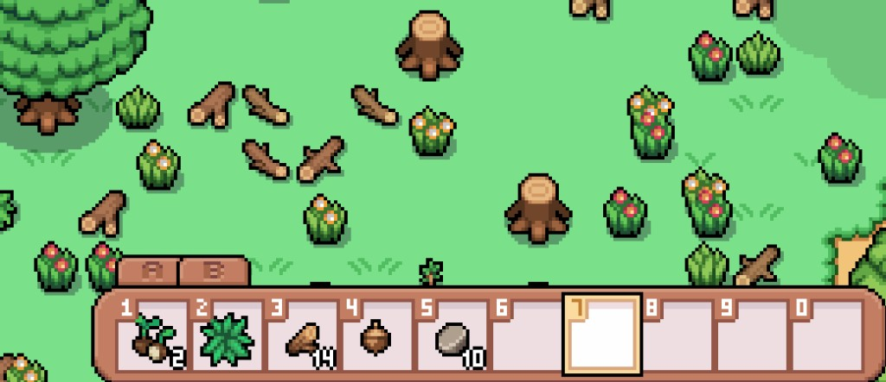
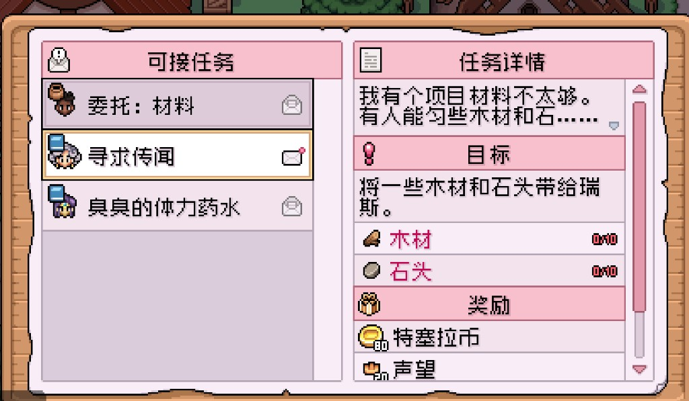
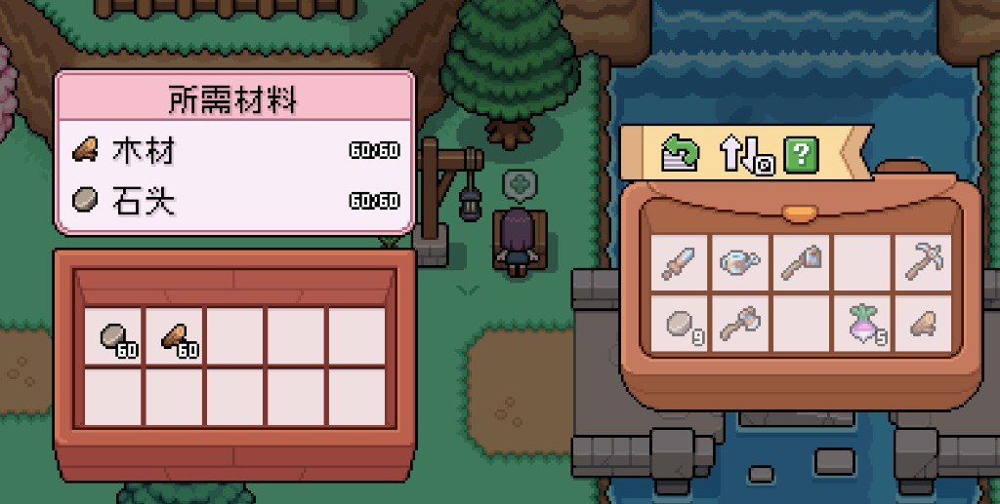

Quick answers
- Chest near home is craft priority one.
- Wood and stone feed quests and repairs.
- Visit carpenter / workbench when you need blueprints.
- Furniture sets can wait.
- Keep materials for donation boxes.
Essentials list
- Storage
- Materials stockpile
- Quest turn-ins (wood/stone)
- Then nice furniture
Carpenter loop
Ryis and Landen on the Eastern Road / town workbench area handle building progress. Bring wood when requests ask—do not confuse the boarded bell tower for their shop.
Safe to skip
- Decorating every empty tile
- Crafting while crops wilt
Screenshots from our save
Real Fields of Mistria shots from our first-season play. Captions in English; in-game UI language may differ.




FAQ
Where is the carpenter?
Eastern Road shop / town crafting areas—follow Ryis on the map.
Out of wood?
Chop on rainy leftover-energy days.
Unofficial fan guide. Not affiliated with NPC Studio. Verify details in your game version.